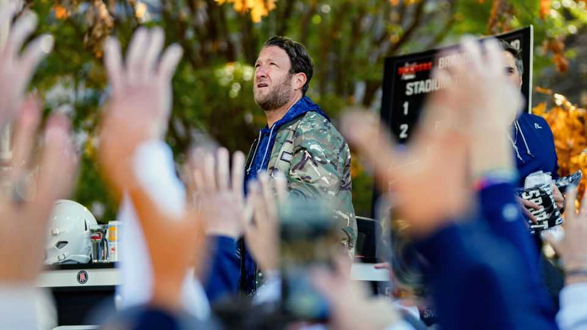

Bold, brash and divisive: inside the Barstool Sports empire
Dave Portnoy has created a loyal audience by refusing to please everyone

Jul 30th 2026
IT IS A well-trodden path: a young man, frustrated with life as an office drone, decides he wants to be his own boss. When he was in his mid-20s, Dave Portnoy came up with three business ideas: selling used furniture, connecting ambitious high-school athletes with college coaches and setting up a newspaper focused on gambling and sport. He settled on the third option and the first issue of Barstool Sports hit the streets of Boston, where Mr Portnoy lived, in August 2003. Its motto was: “By the common man, for the common man”.
It has made its founder uncommonly wealthy. In 2020 Mr Portnoy made $178m when his investors sold Barstool Sports at a valuation of $650m. (By then it was no longer a newspaper but a digital media brand with podcasts and merchandise.) He has bought the most expensive home ever sold in his home state of Massachusetts: a compound on Nantucket, for $42m. The cover of his boastfully titled book shows him in sunglasses, smoking a cigar in his swimming pool. How did he achieve the American frat boy’s dream?
It was not by being generally likeable. Mr Portnoy has paid “an army of homeless drunks” to distribute his newspaper, mocked a “legit cripple” whom he defeated at beer pong and urged a journalist for ESPN, an American sports-television network, to “sex it up and be slutty”. In a blog post, he wrote: “I never condone rape. But if you’re a size six and you’re wearing skinny jeans, you kind of deserve to be raped.”
Mr Portnoy has since disavowed that blog post (“I wish I never wrote it”). He says the disabled person whom he beat at beer pong “loved it”. And he claims to have “squashed” the feud with the ESPN journalist. Yet it all points to Barstool’s crude, jockish sense of humour, which many find offensive. Mr Portnoy has a ready, if logically wonky, retort: “If you didn’t like what we said, don’t read it.”
Even if Mr Portnoy’s book is not your idea of a pleasurable evening’s reading, he and his brand are worth understanding for the simple fact that they are popular and influential. (Consider that his memoir has been on the New York Times bestseller list since it was published.) Barstool says it attracts 66m monthly unique users; almost half of them are aged between 18 and 34.
Much like the digital version of a fraternity’s living room, Barstool blends stories about pizza (a frequent subject for Mr Portnoy), sport, pop culture and pretty girls with in-jokes and profanity. At a time when politicians and podcast hosts alike espouse an unabashed laddishness, Barstool has flourished. It has earned the moniker of “the Bible of bro culture”.
Barstool’s multiple revenue streams, popular shows and mix of stalwarts and up-and-comers means it functions more like an old-school tv network or Hollywood studio than the newspaper Mr Portnoy started 23 years ago. Like a network, it attracts talent. Pat McAfee, who hosts a popular sport talk show, and Alex Cooper, whose “Call Her Daddy” podcast is one of the most popular and lucrative in the world, both began on Barstool. Mr Portnoy calls this the “Saturday Night Live” model: an incubator of future superstars.
Mr Portnoy gives his customers what they want. He has no more obligation to cater to critics than a steakhouse does to vegans. When people assail him, he digs in and punches back, further deepening the bonds between him and his fans, who, he writes, “view an attack on me as an attack on a family member”.
Perhaps his reluctance to apologise and eagerness to lambast his critics sounds familiar. Mr Portnoy supports Donald Trump and has interviewed the president in the White House. But whereas politicians need majority support to win elections, businesses just need a steady, committed stream of customers to be profitable.
And Barstool has that. To its fans it offers authenticity and a respite from the world of finger-wagging and politically correct jokes. Not everyone likes what Mr Portnoy does. But not everyone has to. ■